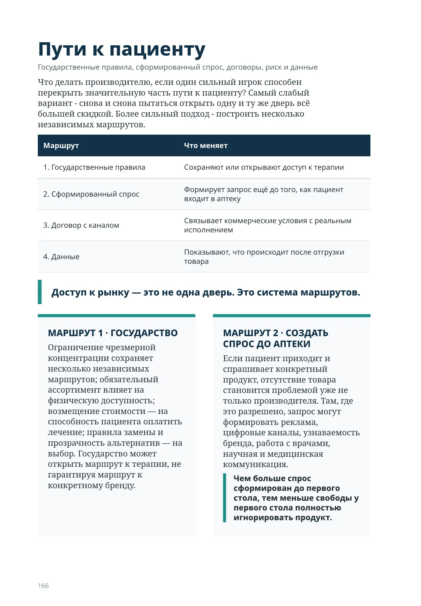
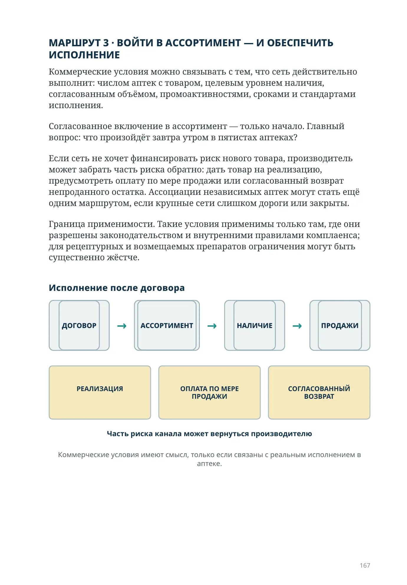
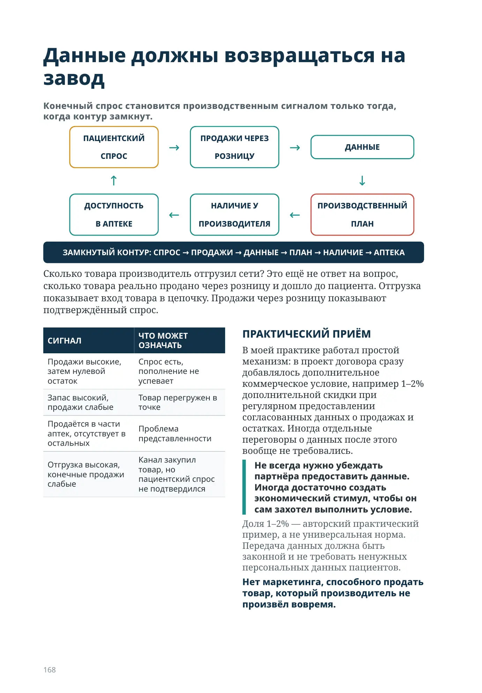
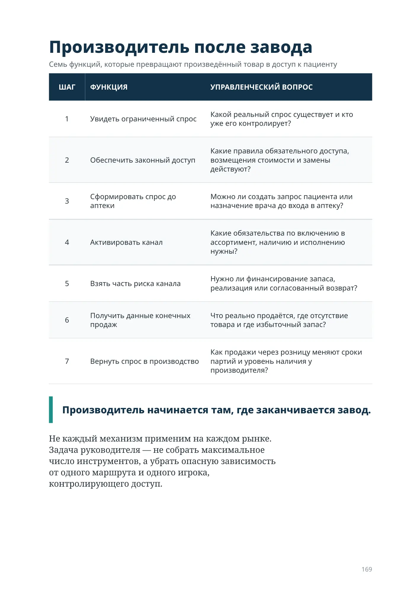
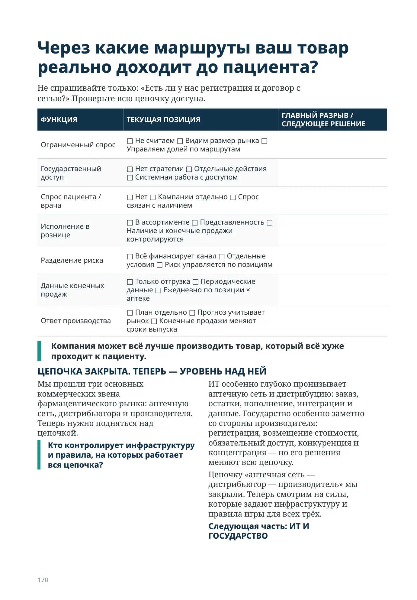
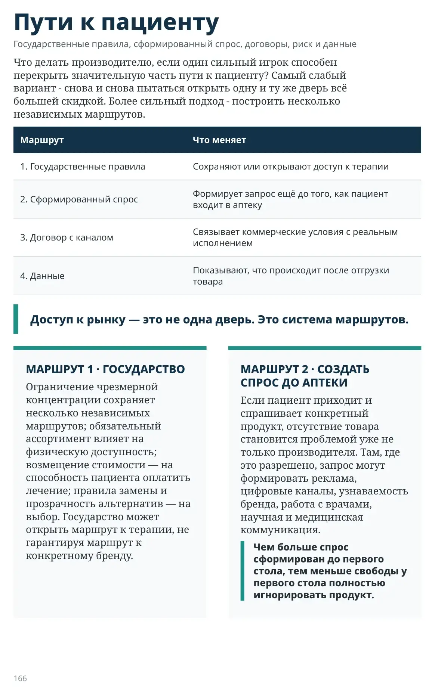
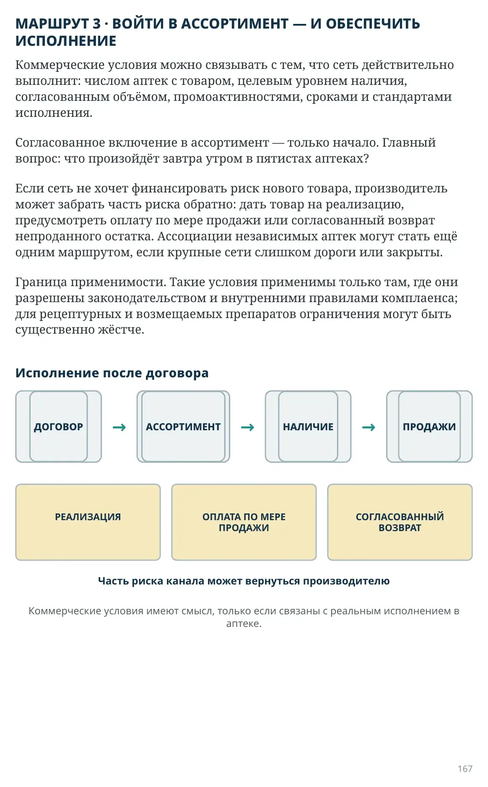
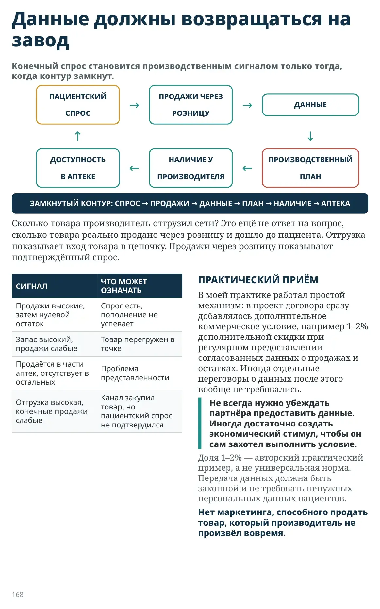
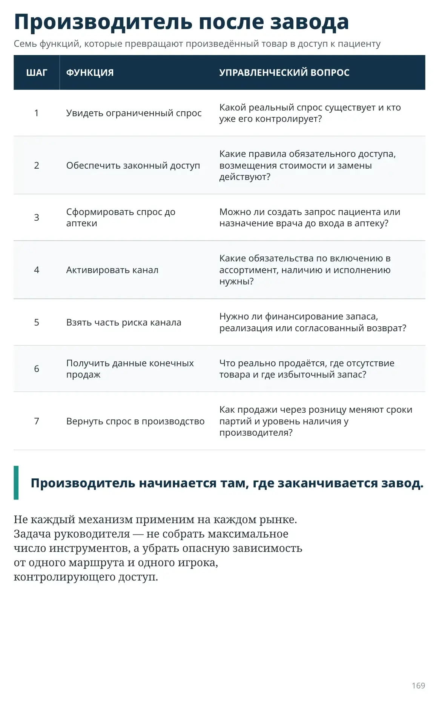
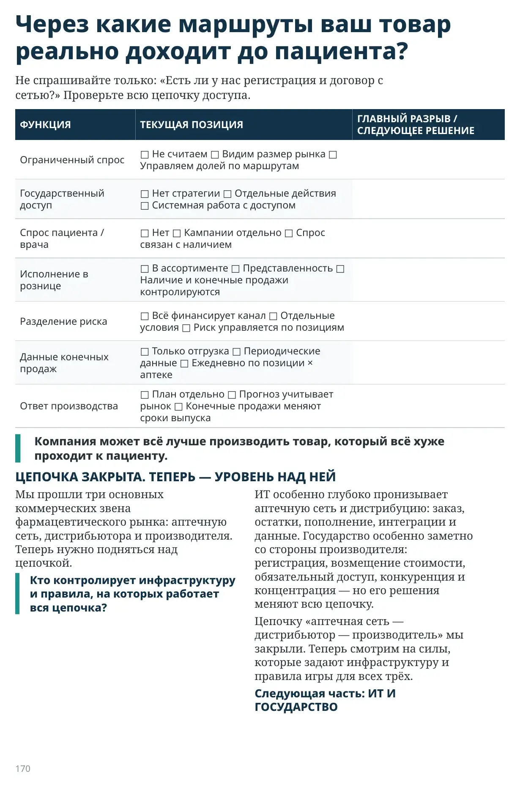

Пути к пациенту
Государственные правила, сформированный спрос, договоры, риск и данные
Что делать производителю, если один сильный игрок способен перекрыть значительную часть пути к пациенту? Самый слабый вариант - снова и снова пытаться открыть одну и ту же дверь всё большей скидкой. Более сильный подход - построить несколько независимых маршрутов.
| Маршрут | Что меняет |
|---|---|
| 1. Государственные правила | Сохраняют или открывают доступ к терапии |
| 2. Сформированный спрос | Формирует запрос ещё до того, как пациент входит в аптеку |
| 3. Договор с каналом | Связывает коммерческие условия с реальным исполнением |
| 4. Данные | Показывают, что происходит после отгрузки товара |
Доступ к рынку — это не одна дверь. Это система маршрутов.
МАРШРУТ 1 · ГОСУДАРСТВО
Ограничение чрезмерной концентрации сохраняет несколько независимых маршрутов; обязательный ассортимент влияет на физическую доступность; возмещение стоимости — на способность пациента оплатить лечение; правила замены и прозрачность альтернатив — на выбор. Государство может открыть маршрут к терапии, не гарантируя маршрут к конкретному бренду.
МАРШРУТ 2 · СОЗДАТЬ СПРОС ДО АПТЕКИ
Если пациент приходит и спрашивает конкретный продукт, отсутствие товара становится проблемой уже не только производителя. Там, где это разрешено, запрос могут формировать реклама, цифровые каналы, узнаваемость бренда, работа с врачами, научная и медицинская коммуникация.
Чем больше спрос сформирован до первого стола, тем меньше свободы у первого стола полностью игнорировать продукт.

МАРШРУТ 3 · ВОЙТИ В АССОРТИМЕНТ — И ОБЕСПЕЧИТЬ ИСПОЛНЕНИЕ
Коммерческие условия можно связывать с тем, что сеть действительно выполнит: числом аптек с товаром, целевым уровнем наличия, согласованным объёмом, промоактивностями, сроками и стандартами исполнения.
Согласованное включение в ассортимент — только начало. Главный вопрос: что произойдёт завтра утром в пятистах аптеках?
Если сеть не хочет финансировать риск нового товара, производитель может забрать часть риска обратно: дать товар на реализацию, предусмотреть оплату по мере продажи или согласованный возврат непроданного остатка. Ассоциации независимых аптек могут стать ещё одним маршрутом, если крупные сети слишком дороги или закрыты.
Граница применимости. Такие условия применимы только там, где они разрешены законодательством и внутренними правилами комплаенса; для рецептурных и возмещаемых препаратов ограничения могут быть существенно жёстче.

Данные должны возвращаться на завод
СПРОС
РОЗНИЦУ
В АПТЕКЕ
ПРОИЗВОДИТЕЛЯ
ПЛАН
Сколько товара производитель отгрузил сети? Это ещё не ответ на вопрос, сколько товара реально продано через розницу и дошло до пациента. Отгрузка показывает вход товара в цепочку. Продажи через розницу показывают подтверждённый спрос.
| СИГНАЛ | ЧТО МОЖЕТ ОЗНАЧАТЬ |
|---|---|
| Продажи высокие, затем нулевой остаток | Спрос есть, пополнение не успевает |
| Запас высокий, продажи слабые | Товар перегружен в точке |
| Продаётся в части аптек, отсутствует в остальных | Проблема представленности |
| Отгрузка высокая, конечные продажи слабые | Канал закупил товар, но пациентский спрос не подтвердился |
ПРАКТИЧЕСКИЙ ПРИЁМ
В моей практике работал простой механизм: в проект договора сразу добавлялось дополнительное коммерческое условие, например 1–2% дополнительной скидки при регулярном предоставлении согласованных данных о продажах и остатках. Иногда отдельные переговоры о данных после этого вообще не требовались.
Не всегда нужно убеждать партнёра предоставить данные. Иногда достаточно создать экономический стимул, чтобы он сам захотел выполнить условие.
Доля 1–2% — авторский практический пример, а не универсальная норма. Передача данных должна быть законной и не требовать ненужных персональных данных пациентов.
Нет маркетинга, способного продать товар, который производитель не произвёл вовремя.

Производитель после завода
Семь функций, которые превращают произведённый товар в доступ к пациенту
| ШАГ | ФУНКЦИЯ | УПРАВЛЕНЧЕСКИЙ ВОПРОС |
|---|---|---|
| 1 | Увидеть ограниченный спрос | Какой реальный спрос существует и кто уже его контролирует? |
| 2 | Обеспечить законный доступ | Какие правила обязательного доступа, возмещения стоимости и замены действуют? |
| 3 | Сформировать спрос до аптеки | Можно ли создать запрос пациента или назначение врача до входа в аптеку? |
| 4 | Активировать канал | Какие обязательства по включению в ассортимент, наличию и исполнению нужны? |
| 5 | Взять часть риска канала | Нужно ли финансирование запаса, реализация или согласованный возврат? |
| 6 | Получить данные конечных продаж | Что реально продаётся, где отсутствие товара и где избыточный запас? |
| 7 | Вернуть спрос в производство | Как продажи через розницу меняют сроки партий и уровень наличия у производителя? |
Производитель начинается там, где заканчивается завод.
Не каждый механизм применим на каждом рынке. Задача руководителя — не собрать максимальное число инструментов, а убрать опасную зависимость от одного маршрута и одного игрока, контролирующего доступ.

Через какие маршруты ваш товар реально доходит до пациента?
Не спрашивайте только: «Есть ли у нас регистрация и договор с сетью?» Проверьте всю цепочку доступа.
| ФУНКЦИЯ | ТЕКУЩАЯ ПОЗИЦИЯ | ГЛАВНЫЙ РАЗРЫВ / СЛЕДУЮЩЕЕ РЕШЕНИЕ |
|---|---|---|
| Ограниченный спрос | □ Не считаем □ Видим размер рынка □ Управляем долей по маршрутам | |
| Государственный доступ | □ Нет стратегии □ Отдельные действия □ Системная работа с доступом | |
| Спрос пациента / врача | □ Нет □ Кампании отдельно □ Спрос связан с наличием | |
| Исполнение в рознице | □ В ассортименте □ Представленность □ Наличие и конечные продажи контролируются | |
| Разделение риска | □ Всё финансирует канал □ Отдельные условия □ Риск управляется по позициям | |
| Данные конечных продаж | □ Только отгрузка □ Периодические данные □ Ежедневно по позиции × аптеке | |
| Ответ производства | □ План отдельно □ Прогноз учитывает рынок □ Конечные продажи меняют сроки выпуска |
Компания может всё лучше производить товар, который всё хуже проходит к пациенту.
ЦЕПОЧКА ЗАКРЫТА. ТЕПЕРЬ — УРОВЕНЬ НАД НЕЙ
Мы прошли три основных коммерческих звена фармацевтического рынка: аптечную сеть, дистрибьютора и производителя. Теперь нужно подняться над цепочкой.
Кто контролирует инфраструктуру и правила, на которых работает вся цепочка?
ИТ особенно глубоко пронизывает аптечную сеть и дистрибуцию: заказ, остатки, пополнение, интеграции и данные. Государство особенно заметно со стороны производителя: регистрация, возмещение стоимости, обязательный доступ, конкуренция и концентрация — но его решения меняют всю цепочку.
Цепочку «аптечная сеть — дистрибьютор — производитель» мы закрыли. Теперь смотрим на силы, которые задают инфраструктуру и правила игры для всех трёх.
Следующая часть: ИТ И ГОСУДАРСТВО